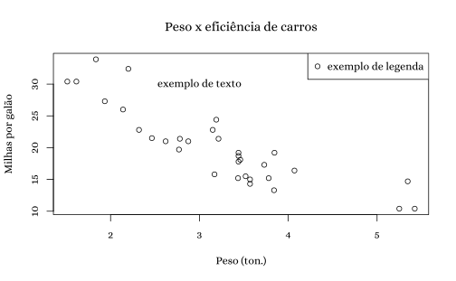
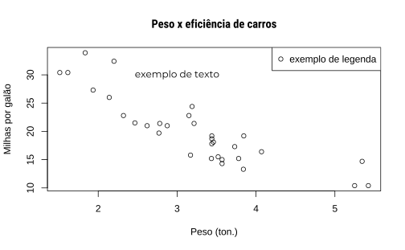
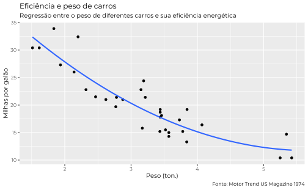
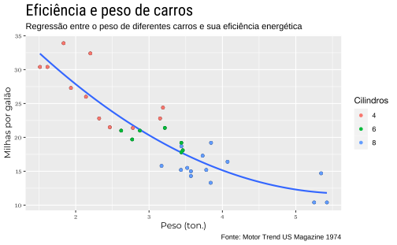
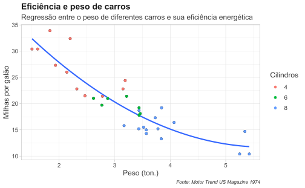
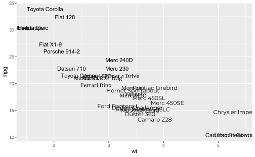
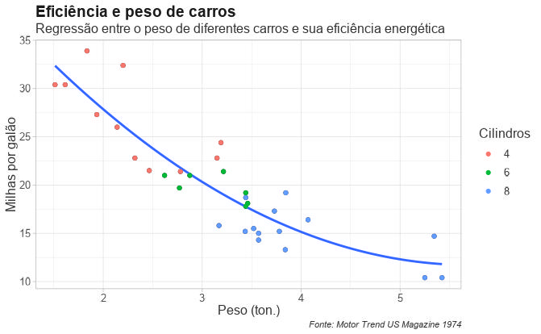

# Instale o pacote se necessário
install.packages("extrafont")
# Opcionalmente instale a versão em desenvolvimento
remotes::install_github("yixuan/showtext")
library(showtext)Criar boas visualizações é parte importante de qualquer análise de dados.
A tipografia de um texto deve complementar a mensagem e o tom que se quer comunicar e o mesmo vale para visualizações com dados. A fonte do texto ajuda a transmitir informação e pode comunicar, por exemplo, maior sobriedade, profissionalismo, etc.
O pacote showtext, desenvolvido por yixuan, facilita a importação e o uso de fontes em gráficos no R. O pacote funciona com uma variedade de extensões de fontes, não sendo limitado como o extrafont, por exemplo, a arquivos .ttf.
R
O primeiro passo necessário é instalar o pacote do CRAN usando install.packages().
Importar fontes é bastante simples. Como exemplo vamos importar algumas fontes do Google usando a função font_add_google(). Esta função, em geral, leva apenas dois arugmentos. O primeiro argumento deve ser o nome “oficial” da fonte; o segundo argumento é como será o nome desta fonte dentro do R.
No exemplo abaixo vamos importar três fontes: Montserrat, Roboto Condensed e Alice. No primeiro caso vamos manter o mesmo nome da fonte; já nos outros dois vamos usar nomes diferentes.
font_add_google("Montserrat", "Montserrat")
# É possível simplificar o nome da fonte
font_add_google("Roboto Condensed", "RobCond")
font_add_google("Alice", "alice")Também é possível importar fontes que já estão instaladas no seu computador usando a função font_add. Agora a ordem dos arugmentos é invertida: o primeiro argumento define o nome da fonte dentro do R enquanto o segundo argumento é o nome do arquivo que pode ser .ttf, .ttc ou outros.
Em geral, o showtext consegue encontrar corretamente as pastas onde estes arquivos estão armazenados. Caso você tenha problema com isso vai ter de especificar este caminho manualmente com a função font_paths().
# Importar a fonte Helvetica
font_add("HelveticaNeue", "HelveticaNeue.ttc")
# Importar a fonte Arial (junto com a versão em negrito, itálico, etc.)
font_add(
"Arial",
regular = "Arial.ttf",
bold = "Arial Bold.ttf",
italic = "Arial Italic.ttf",
bolditalic = "Arial Bold Italic.ttf")Para informar ao R que o showtext deve ser utilizado para desenhar o texto dos gráficos é preciso usar a função showtext_auto(). Só é preciso fazer isto uma única vez por sessão. Se você sempre utiliza o showtext você pode considerar incluir esta função no seu .Rprofile, assim o pacote será carregado automaticamente sempre que você abrir uma nova sessão no R.
# Indica que o showtext deve ser utilizado para criar as imagens
# Só precisa ser chamado uma única vez por sessão
showtext_auto()Base R
Para modificar a fonte dos elementos textuais dos gráficos feitos com o plot() é preciso ajustar o argumento family. Usando as funções base do R, este argumento aparece dentro da função par (que configura vários parâmetros dos gráficos).
O código abaixo mostra como trocar a fonte do gráfico.
# Define a fonte padrão do gráfico
par(family = "alice")
# Monta um scatter plot de exemplo
plot(mpg ~ wt, data = mtcars, ylab = "Milhas por galão", xlab = "Peso (ton.)")
title("Peso x eficiência de carros")
text(labels = "exemplo de texto", x = 3, y = 30)
legend("topright", legend = "exemplo de legenda", pch = 1)
Note que todos os objetos textuais (título, legenda, etc.) são convertidos para a mesma fonte. Caso se queira fontes diferentes para estes elementos é preciso especificá-los adequadamente. Por exemplo, para trocar somente a fonte do título
title("nome_do_titulo", family = "nome_fonte")
plot(mpg ~ wt, data = mtcars, ylab = "Milhas por galão", xlab = "Peso (ton.)")
title("Peso x eficiência de carros", family = "RobCond")
text(labels = "exemplo de texto", x = 3, y = 30, family = "Montserrat")
legend("topright", legend = "exemplo de legenda", pch = 1)
Vale notar que, uma vez definida a fonte usando a função par, todos os gráficos subsequentes vão usar esta fonte. Para trocar a fonte é preciso usar a função par novamente. Além da fonte também é possível trocar a ênfase (e.g. face = c("bold", "italic")) e também o tamanho da letra (e.g. cex.axis = 1.5, cex.main = 2).
ggplot2
Também é possível trocar a fonte de gráficos feitos com outros pacotes, como o ggplot2. O exemplo abaixo monta um gráfico similar ao que foi feito acima. Modifica-se a fonte dentro da função theme. Esta função é um tanto particular, então vale a pena discorrer um pouco sobre ela. Ela é basicamente usada para modificar elementos do gráfico. Há quatro elementos principais, dos quais só nos interessa um: o element_text. São seis os principais elementos textuais que pode-se modificar:
axis.text- texto dos eixos (em geral, os números do eixo);axis.title- nome do eixo (e.g. “Milhas por galão” no exemplo acima);legend.text- texto da legenda;legend.title- título da legenda;plot.title- título do gráfico;text- todos os acima.
Pode-se ser mais específico com o texto dos eixos usando axis.text.x e axis.text.y, por exemplo. O último dos elementos listados acima funciona como um “coringa”, ele serve para modificar de uma vez só todos os elementos textuais de um gráfico. No exemplo abaixo modifico somente o text.
library(ggplot2)
p <- ggplot(data = mtcars, aes(x = wt, y = mpg)) +
geom_point() +
stat_smooth(method = "lm", formula = y ~ poly(x, 2), se = FALSE) +
labs(
x = "Peso (ton.)",
y = "Milhas por galão",
title = "Eficiência e peso de carros",
subtitle = "Regressão entre o peso de diferentes carros e sua eficiência energética",
caption = "Fonte: Motor Trend US Magazine 1974"
)p + theme(text = element_text(family = "Montserrat", size = 10))
O próximo exemplo mostra como modificar alguns dos diferentes elementos do gráfico. Aproveito a variável cyl (cilindradas) para diferenciar os carros em três grupos para que o gráfico agora tenha uma legenda.
p +
geom_point(aes(color = as.factor(cyl))) +
scale_color_discrete(name = "Cilindros") +
theme(
# Modifica o texto (números) dos eixos x e y
axis.text = element_text(family = "alice"),
# Modifica o título do eixo (i.e. Milhas por galão)
axis.title = element_text(family = "Montserrat"),
# Modifica o título da legenda (Cilindros)
legend.title = element_text(family = "HelveticaNeue"),
# Modifica o texto da legenda (i.e. 4, 6, 8)
legend.text = element_text(family = "HelveticaNeue"),
# Modifica o título do gráfico
plot.title = element_text(family = "RobCond", size = 20)
)
Talvez o jeito mais sensato de usar fontes com o ggplot2 seja primeiro especificar uma fonte padrão para o gráfico usando text e depois calibrar as exceções. Os elementos textuais como axis.title e legend.text copiam as propriedades definidas em text.
No exemplo abaixo defino que todos os elementos textuais ser escritos em Arial simples em tamanho 12 na cor "gray20". Depois disso defino que o título deve ter mais destaque com Arial em negrito (bold) num tamanho maior e numa cor mais escura. Por fim, defino que o rodapé do gráfico seja escrito em fonte menor e em itálico.
theme_custom <- theme_light() +
theme(
# Modifica todos os elementos textuais do gráfico
text = element_text(family = "Arial", size = 12, color = "gray20"),
# Modifica apenas o título
plot.title = element_text(face = "bold", size = 14, color = "gray10"),
# Modifica apenas a nota no rodapé
plot.caption = element_text(face = "italic", size = 8)
)
p +
geom_point(aes(color = as.factor(cyl))) +
scale_color_discrete(name = "Cilindros") +
theme_custom
Por último, também pode ser interessante usar fontes diferentes para representar dados diferentes. Isto é possível usando o argumento family dentro do aes. Da mesma forma, seria possível também representar grupos de dados diferentes com tamanhos de fontes diferentes ou mesmo destacar algum grupo específico com itálico.
nomes <- row.names(mtcars)
mtcars$cyl <- as.factor(mtcars$cyl)
ggplot(data = mtcars, aes(x = wt, y = mpg)) +
geom_text(aes(label = nomes, family = c("Arial", "alice", "Montserrat")[cyl]))
Anexo: problemas com DPI e RMarkdown
Apesar de muito conveniente, o showtext não é inteiramente desprovido de problemas. Dois problemas que enfrento com alguma recorrência são diferenças de DPI na hora de exportar gráficos e problemas com RMarkdown.
O problema com o RMarkdown é mais simples. Em versões antigas do RMarkdown e do showtext era necessário adicionar um argumento fig.showtext = TRUE em todos os chunks em que um gráfico usando showtext fosse renderizado. Alternativamente, podia-se modificar esta opção globalmente inserido o seguinte código no início do documento RMarkdown.
knitr::opts_chunk$set(
fig.showtext = TRUE,
fig.retina = 1
)Acredito, mas não tenho certeza, de que este problema sumiu em versões mais recentes dos pacotes, pois com frequência eu esqueço de adicionar estes argumentos mas não encontro problemas na prática.
O problema com o DPI na hora de exportar gráficos é mais complicado. Por problemas de DPI quero dizer quando o showtext “desenha” o texto num DPI diferente do ggplot2. O resultado é que o texto fica ou grande ou pequeno demais. Por padrão o showtext utiliza o DPI em 96.
Vamos montar um gráfico para ilustrar o problema.
grafico <- p +
geom_point(aes(color = as.factor(cyl))) +
scale_color_discrete(name = "Cilindros") +
theme_custom
# Exportar o gráfico em alta resolução
ggsave("meu_grafico.jpeg", grafico, dpi = 300)Quando vamos abrir o arquivo que foi exportado temos o resultado abaixo.

Como a imagem foi salva com DPI mais elevado o texto fica menor do que deveria; em casos mais extremos o texto fica minúsculo a ponto de ser ilegível. Há duas formas de tentar contornar este problema: (1) reduzir o DPI dentro de ggsave; ou (2) modificar o DPI do showtext.
Vamos tentar a primeira solução: modificar o ggsave para o DPI padrão do showtext. Agora o texto está maior mas a proporção dos elementos está péssima! O resultado é pior do que o problema inicial.
# Exportar a imagem num dpi menor
ggsave("meu_grafico_96.jpeg", grafico, dpi = 96)
A segunda solução é modificar as opções internas do showtext. Isto é bastante simples e pode ser feito com o showtext_opts(dpi = 300) e chamando novamente a função showtext_auto().
# Ajusta o DPI do showtext
showtext_opts(dpi = 300)
# "Ativa" o showtext novamente
showtext_auto()
# Refaz o gráfico (isto é importante!)
grafico <- p +
geom_point(aes(color = as.factor(cyl))) +
scale_color_discrete(name = "Cilindros") +
theme_custom
# Exporta um novo gráfico
ggsave("meu_grafico_300.jpeg", grafico, dpi = 300)Agora o tamanho do texto está correto e a imagem como um todo está em alta resolução. Um problema é que a imagem ficou bastante grande, mas isto pode ser ajustado variando os argumentos width e height da função ggsave.

Vale notar que, a depender do seu sistema operacional, modificar o DPI padrão do showtext pode distorcer os gráficos dentro do R ou RStudio. Na prática o melhor workflow pode ser de modificar o DPI do showtext apenas no momento de exportar os gráficos.